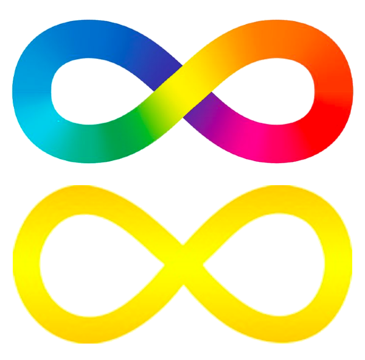

The rainbow infinity symbol is linked to the greater neurodiversity movement. Many autistic adults also use a gold infinity to represent autistic acceptance (chemical symbol Au). The puzzle piece has historically been a symbol, but many believe it contributes to the infantilism of autistic people. However, we should listen to those who are actually autistic and their choice in symbolism.
An excerpt from "Don't Mourn For Us" by Jim Sinclair
Autism is not an appendage.
Autism isn't something a person has, or a "shell" that a person is trapped inside. There's no "normal" child hidden behind the autism. Autism is a way of being. It is pervasive; it colors every experience, every sensation, perception, thought, emotion, and encounter, every aspect of existence. It is not possible to separate the autism from the person--and if it were possible, the person you'd have left would not be the same person you started with.This is important, so take a moment to consider it: Autism is a way of being. It is not possible to separate the person from the autism.
Therefore, when parents say,
I wish my child did not have autism,
what they're really saying is,
I wish the autistic child I have did not exist, and I had a different (non-autistic) child instead.
Read that again. This is what we hear when you mourn over our existence. This is what we hear when you pray for a cure. This is what we know, when you tell us of your fondest hopes and dreams for us: that your greatest wish is that one day we will cease to be, and strangers you can love will move in behind our faces. Read the full article here
Commonalities between autism and other disorders
Image credits: @tfw-adhd on tumblr